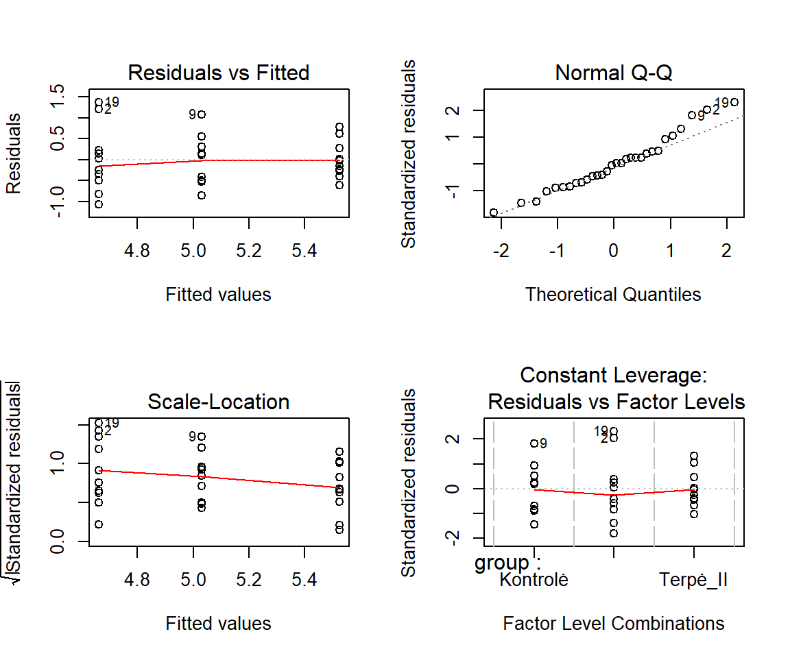
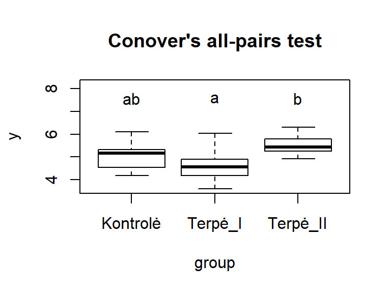

19. ANOVA ir jos analogai
Užsiėmimo tikslas – susipažinti su statistinių hipotezių tikrinimo būdais kelioms nepriklausomoms imtims taikant dispersinę analizę (ANOVA) ar jai analogiškus statistinius kriterijus.
ANOVA yra trumpasis dispersinės analizės (angl. ANalysis Of VAriance) pavadinimas. Ši analizė arba jos analogai skirti lyginti kelių nepriklausomų grupių skirstinių padėtis. Paprasčiau sakant, skirta atsakyti į tokius klausimus:
- ar kelių skirtingų irisų rūšių vidutiniai žiedlapių dydžiai skiriasi?
- ar kelių gydymo metodų efektyvumas skiriasi?
- kurią iš terpių geriausia naudoti kituose eksperimento etapuose (t. y., ar ląstelės, auginamos keliose skirtingose terpėse, yra linkusios būti skirtingo dydžio?);
- kurį pašarą iš 6 turimų naudoti efektyviausia norint didžiausių viščiukų?
Klasikinis ANOVA variantas – tai \(t\) kriterijaus analogas, kai norima palyginti dviejų ar daugiau nepriklausomų imčių (grupių) vidurkius. Sakykime, kad lyginame \(k\) grupių. Nulinė analizės hipotezė teigia, kad visų grupių vidurkiai lygūs, o jos alternatyva – bent dviejų grupių (kurių tiksliai – pasakyti negalima) vidurkiai skiriasi:
Čia \(i\) ir \(j\) – lyginamų grupių numeriai.
Atlikdami ANOVA pagal dispersijas tikriname, ar skirtumai tarp vidurkių yra statistiškai reikšmingi. Jei norime patikrinti, ar skirtumai tarp dispersijų yra reikšmingi, naudojame Levene (Livyno) kriterijų.
Atkreipkite dėmesį, kad yra keli ANOVA variantai. Kai lyginimas atliekamas pagal vieną kategorinį kintamąjį (t. y., pagal vieną faktorių), ANOVA vadinama vienfaktore (angl. one-way ANOVA arba one factor ANOVA). Jei pagal du – dvifaktorė ir t.t. Yra ir specialių ANOVA variantų, skirtų priklausomoms imtims, pvz., blokuotųjų duomenų ANOVA. Taip pat yra neparametrinių variantų, tokių kaip Kruskal-Wallis kriterijus, kuris lygina nebe vidurkius, o tai, ar bent viena grupė yra linkusi turėti kitokias (didesnes arba mažesnes) reikšmes nei visos kitos.
Šiame skyriuje mokysimės taikyti tik vienfaktorės ANOVA modelį, skirtą nepriklausomoms duomenų imtims, bei šio modelio analogus, kai pažeidžiamos klasikinio vienfaktorės ANOVA modelio prielaidos (pvz., normalumas ar dispersijų homogeniškumas).
19.1 Kurį vienfaktorės ANOVA variantą ar analogą pasirinkti?
Vienfaktorė ANOVA analizė grindžiama šiomis prielaidomis:
- Grupių duomenys yra nepriklausomi;
- Kiekvienos grupės kintamieji pasiskirstę normaliai (\(X_{gr} \sim \mathcal{N}(\mu_{gr},\sigma^2_{gr})\));
- Grupių dispersijos yra lygios.
Tad prieš atliekant ANOVA, reikia patikrinti duomenims keliamas prielaidas ir pasirinkti tinkamą analizės variantą ar neparametrinį jos analogą (pav. 19.1). Kai duomenų grupės yra nepriklausomos ir jų yra bent 3, įprastai renkamasi tarp klasikinės vienfaktorės ANOVA analizės, Welch \(F\) (Velčo \(F\)) kriterijaus (dar vadinamo Welch ANOVA), kai pažeidžiama lygių dispersijų prielaida, ir Kruskal-Wallis (Kruskalo-Voliso) kriterijaus, kai smarkiai pažeidžiama normalumo prielaida.
Schema yra supaprastinta ir tik rekomendacinio pobūdžio. Jos tikslas – būti „atspirties tašku“ renkantis analizės metodą. Konkrečiu atveju gali būti išlygų, papildomų sąlygų arba pasirinkimo variantų, kurie schemoje nepažymėti.
Pav. 19.1: Skirstinio padėties lyginimas kelioms imtims. Schema, padedanti išsirinkti reikiamą vienfaktorės nepriklausomų imčių (grupių) ANOVA variantą ar jos analogą. Apatinėje dalyje pateikiami keli galimi post-hoc analizės variantai, skirti grupes lyginti poromis. Skaičiais pažymėtų schemos dalių paaiškinimas pateiktas tekste žemiau. Spalvinio žymėjimo reikšmės pateiktos skyriuje „14.4 Schemos metodams pasirinkti“.
Skaičiais pažymėtų 19.1 schemos dalių paaiškinimai:
- Jei imčių dydžiai vienodi arba panašūs, ANOVA atspari mažiems ir net vidutiniams normalumo ir lygių dispersijų prielaidų pažeidimams.
- Sprendžiant „iš akies“, dispersijos (ne standartiniai nuokrypiai) neturėtų skirtis daugiau kaip 3 kartus.
- „Vienodos formos“ reiškia, kad visų grupių skirstinių asimetrija (jei yra) – vienos krypties, o sklaida (dispersijos) – daugmaž vienoda.
- Jei visų grupių skirstinių forma vienoda ir skiriasi tik poslinkio parametru, t. y., skiriasi skirstinio padėtis (tokiems duomenims ir rekomenduojamas Kruskal-Wallis kriterijus), tada galime daryti išvadas apie grupių medianas. Šiuo atveju analizės rezultatai informatyvesni nei 5 punkto atveju.
- Jei lyginamų grupių skirstinių forma skirtinga (skiriasi dispersijos, būdinga skirtingos krypties asimetrija), išvadas darome tik apie tai, kad bent viena grupė yra linkusi būti kitokia (arba didesnė, arba mažesnė) nei kitos. Techniškai kalbant, išvadas darome tik apie vidutinius rangus, bet ne medianas. Todėl šie rezultatai mažiau informatyvūs nei 4 punkto atveju.
- Apie galimus ANOVA post-hoc analizės variantus:
- Tukey HSD (angl. honestly significant difference) kriterijaus taikymui duomenys turi būti normalieji, dispersijos lygios, o imties dydžiai (beveik) vienodi;
- Games-Howell kriterijaus taikymui duomenys turi būti normalieji, tačiau lygių dispersijų ir vienodų imties dydžių nereikalaujama. Kiekvienoje lyginamoje imtyje turi būti bent 6 nariai;
- Galima atlikti keletą nepriklausomų imčių (Stjudento ar Welch) \(t\) kriterijaus taikymo procedūrų, bet būtina naudoti daugybinių lyginimų \(p\) reikšmių korekcijos metodus (Holm, Bonferroni ar kitą procedūrą, kuri gali būti atlikta naudojant funkciją
p.adjust()); - Yra ir kitų čia nepaminėtų post-hoc kriterijų.
- Tukey HSD (angl. honestly significant difference) kriterijaus taikymui duomenys turi būti normalieji, dispersijos lygios, o imties dydžiai (beveik) vienodi;
- Apie galimus Welch ANOVA post-hoc analizės variantus:
- Games-Howell kriterijui duomenys turi būti normalieji, tačiau lygių dispersijų ir vienodų imties dydžių nereikalaujama. Kiekvienoje lyginamoje imtyje turi būti bent 6 nariai;
- Galima keletą kartų taikyti Welch t kriterijų grupių poroms, bet būtina naudoti daugybinių lyginimų \(p\) reikšmių korekcijos metodus (Holm, Bonferroni ar kitą procedūrą, kuri gali būti atlikta naudojant funkciją
p.adjust()); - Yra kitų čia nepaminėtų kriterijų. Šie kriterijai privalo nereikalauti lygių dispersijų prielaidos.
- Games-Howell kriterijui duomenys turi būti normalieji, tačiau lygių dispersijų ir vienodų imties dydžių nereikalaujama. Kiekvienoje lyginamoje imtyje turi būti bent 6 nariai;
- Apie galimus Kruskal-Wallis kriterijaus post-hoc analizės variantus:
- Galima taikyti arba Conover-Iman, arba Dunn kriterijų. Tačiau Conover-Iman kriterijus yra galingesnis. Bet kuriuo atveju gautoms \(p\) reikšmėms reikia atlikti Holm ar kitą daugybinių lyginimų \(p\) reikšmių korekciją (šiame skyrelyje nurodytas metodas tokią korekciją atlieka automatiškai).
- Galima keletą kartų lyginamų grupių poroms taikyti nepriklausomų imčių Mann-Whitney-Wilcoxon kriterijų, bet tokiu atveju būtina naudoti \(p\) reikšmių korekcijos metodus (Holm, Bonferroni ar kitą procedūrą, kuri gali būti atlikta naudojant, funkciją
p.adjust()); - Yra ir kitų čia nepaminėtų kriterijų. Jie privalo būti neparametriniai ir tikti nenormaliesiems duomenims.
- Tai schema 18.2.
Jei imtys yra pakankamai didelės, o imčių didumai yra vienodi (arba panašūs), vienfaktorė ANOVA yra ganėtinai atspari nedideliems ir netgi vidutiniams nuokrypiams nuo pasiskirstymo normalumo ir lygių dispersijų (dispersijų homogeniškumo) prielaidų.
19.2 Išsamios ANOVA analizės aspektai
19.2.1 Eiga
Jei reikia atlikti ANOVA ar į ją panašią analizę, rekomenduojama tokia eiga:
- tiksliai apsibrėžiamas klausimas;
- atliekama duomenų suvestinė ir nubraižomas grafikas, galintis padėti atsakyti į iškeltą klausimą;
- patikrinamos analizės prielaidos:
- ar duomenų imtys/grupės nepriklausomos:
- sprendžiame pagal tai, kaip buvo suplanuotas ir atliktas eksperimentas.
- ar duomenų pakankamai daug:
- geriausia, kai kiekvienoje grupėje bent po 15, jei grupių daug – bent po 20 atvejų;
- kitu atveju duomenys privalo skirstytis idealiai normaliai, grupių dispersijos tik nežymiai skirtis;
- jei duomenų per mažai, negalime patikimai patikrinti parametriniams kriterijams keliamų prielaidų:
- mažoms imtims/grupėms statistiniai kriterijai linkę rodyti, kad skirtumai yra statistiškai nereikšmingi net esant dideliems skirtumams;
- didelėms imtims/grupėms net maži skirtumai bus pripažįstami statistiškai reikšmingais.
- mažoms imtims geriau taikyti neparametrinius kriterijus;
- kiekvienos imties/grupės pasiskirstymo normalumo prielaida:
- ir į vieną liniją išsidėstę qq diagramos taškai, ir Shapiro-Wilk kriterijaus \(p\ge0,05\) rodo, kad normalumo prielaida tenkinama;
- gali būti, kad šių dvejų metodų rezultatai nesutaps:
- mažoms imtims statistiniai kriterijai yra linkę rodyti, kad nuokrypis nuo normalumo yra statistiškai nereikšmingas, net kai jis yra didelis, didelėms imtims net ir nedidelis nuokrypis nuo normalumo yra pripažįstamas statistiškai reikšmingas.
- prielaidos tikrinimą atliekame kiekvienai grupei atskirai (qq grafikai braižomi ir Shapiro-Wilk kriterijus atliekamas tiek kartų, kiek yra lyginamų grupių)..
- lygių dispersijų prielaida:
- jei ir Levene/Brown-Forsythe kriterijaus \(p\ge0,05\), ir mažiausia bei didžiausia grupių dispersijos skiriasi mažiau nei 3 kartus, lygių dispersijų prielaida tenkinama;
- pastaba:
- mažoms grupėms statistiniai kriterijai bus linkę rodyti, kad dispersijų skirtumai (net labai dideli) nėra statistiškai reikšmingi;
- didelėms grupėms net ir menkiausi skirtumai bus pripažįstami statistiškai reikšmingais;
- dispersijas apskaičiuojame kiekvienai grupei atskirai, bet Levene/Brown-Forsythe kriterijų taikome tik vieną kartą, nes jis lygina visų grupių dispersijas iš karto.
- ar duomenų imtys/grupės nepriklausomos:
- teisingai pasirenkama ir atliekama pagrindinė analizė;
- jei rezultatas statistiškai reikšmingas (rodo, kad bent viena grupė nuo kitų skiriasi statistiškai reikšmingai), atliekama papildoma post-hoc analizė (poriniai palyginimai norint išsiaiškinti, kurios konkrečiai grupės skiriasi).
- rezultatai aprašomi.
19.2.2 Kompaktiškas raidinis žymėjimas (cld)
Sakykime, kelias grupes lyginame poromis. Statistiškai reikšmingus rezultatus tarp grupių, kai lyginimų daug, galime pažymėti taip vadinamu kompaktišku raidiniu žymėjimu (angl., compact letter display, cld). Šio žymėjimo esmė: kiekvienai grupei suteikiama viena ar keletas raidžių. Interpretacija: tarp grupių, kurios neturi bendros raidės, skirtumai yra statistiškai reikšmingi. Jei grupės turi bent vieną bendrą cld raidę – skirtumai statistiškai nereikšmingi. Raidinis žymėjimas labai patogus, kai vienu metu poromis lyginame daug grupių.
| Grupė | cld | Sulygiuotas cld |
|---|---|---|
| Kontrolė | ab | ab |
| Terpė_I | a | a_ |
| Terpė_II | b | _b |
Lentelėje 19.1 rodoma, kad statistiškai reikšmingi skirtumai yra tik tarp grupių „Terpė_I“ ir „Terpė_II“, nes jos neturi bendros raidės. Tuo tarpu reikšmingų skirtumų tarp kontrolės ir kitų grupių nėra, nes jos turi po vieną bendrą cld raidę.
19.3 Kaip atlikti kompiuteriu?
Šio darbo metu reikalingi „R“ paketai tidyverse, knitr, userfriendlyscience, rcompanion, PMCMRplus, DescTools. juos galite įsidiegti naudodami funkciją install.packages().
19.3.2 Cld kompiuteriu
Paketo rcompanion funkcija cldList() – vienas iš būdų sudaryti kompaktišką rainį žymėjimą („19.2.2 Kompaktiškas raidinis žymėjimas (cld)). Svarbiausi funkcijos argumentai:
comparison– lygintų grupių poros: grupių pavadinimai atskirti brūkšniu;p.value– (įprastai koreguotosios) kiekvieno palyginimo metu gautos \(p\) reikšmės;threshold– reikšmingumo lygmuo \(\alpha\) (toks, kokį nurodėte koreguotas \(p\) reikšmes skaičiuojančiai funkcijai).
Pavyzdys. Tarkime, post-hoc analizės metu poromis lyginome grupes „Kontrolė“, „Terpė_I“ ir „Terpė_II“. Lygintų grupių poroje kiekvienos lyginamos grupės pavadinimą kompiuterinė programa automatiškai sujungė brūkšneliu „-“ (dėl to grupės pavadinime brūkšnelio neturėtų būti) ir kiekvienam porinio palyginimo variantui apskaičiavo po (koreguotąją) \(p\) reikšmę. Pavyzdžiui:
palyginimai <- c("Kontrolė - Terpė_I",
"Kontrolė - Terpė_II",
"Terpė_I - Terpė_II")
p_koreguota <- c(0.15, 0.01, 0.50)Raidinis žymėjimas sudaromas taip:
library(rcompanion)
cldList(comparison = palyginimai,
p.value = p_koreguota,
threshold = 0.05)
## Group Letter MonoLetter
## 1 Kontrolė a a
## 2 Terpė_I ab ab
## 3 Terpė_II b bInterpretacija: su reikšmingumo lygmeniu \(\alpha\) (šiuo atveju 0,05) galime teigti, kad „Kontrolė“ statistiškai reikšmingai skiriasi nuo „Terpė_II“, nes neturi bendros raidės. Tarp kitų grupių skirtumai nėra reikšmingi, nes jos turi bent po vieną bendrą raidę.
Kitų skyrių pavyzdžiuose programos kodas, kuriame naudojama cldList(), bus parašytas už jus. Jums tereikės mokėti jį nukopijuoti ir interpretuoti rezultatus. Jei reikia daugiau informacijos, skaitykite funkcijos dokumentacijoje: ?rcompanion::cldList.
19.3.3 Programos kodai: modelio formulė
Kai kurioms funkcijoms – ypač toms, kurios vykdo statistinę analizę – duomenis galime pateikti naudodami modelio formulę. Modelio formulę sudaro užrašas, kuriame naudojama bangelė (~, tariama „pagal“), ir įprastai yra kokios dalys (pavyzdys):
y ~ group, data = my_dataUžrašą y ~ group reiktų skaityti „y pagal group“. Šiuos elementus turite pakeisti pagal savo duomenis šitaip:
my_data– jūsų duomenų lentelės pavadinimas (be kabučių);y– skaitinio kintamojo iš šios lentelės pavadinimas (be kabučių);group– kategorinio kintamojo iš šios lentelės pavadinimas (be kabučių).
Sakykime, jei jūs tiriate ląstelių skaičiaus pasiskirstymą (kintamasis skaičius) ląsteles augindami skirtingose terpėse (kintamasis terpė), o duomenys įrašyti duomenų lentelėje ląstelės, tada turite rašyti (y tampa skaičius, grupe → terpė, duomenys → ląstelės):
skaičius ~ terpė, data = ląstelėsIr, pvz., stačiakampės diagramos braižymas gali atrodyti šitaip:
boxplot(skaičius ~ terpė, data = ląstelės)19.3.4 Programos kodai: funkcija with()
Kai kurios funkcijos nepalaiko modelio formulės. Tokiais atvejais naudosime funkciją with(). Tad tokiu atveju tos pačios stačiakampės diagramos braižymo kodas atrodytų taip:
with(ląstelės, (boxplot(skaičius ~ terpė))Daugiau informacijos funkcijos dokumentacijoje: ?with.
19.3.7 Normalumo ir dispersijų homogeniškumo tikrinimas
Dispersinės analizės normalumo ir homoskedastiškumo (lygių dispersijų) prielaidas galima tikrinti dviem būdais:
- Taip, kaip tai įprastai atliekama statistiniams kriterijams (skaitykite skyriuje „16 Normalumo tikrinimas“ bei „17 Sklaidos lyginimas“). Normaliojo pasiskirstymo prielaidą turėtų tenkinti kiekviena grupė atskirai.
- ANOVA ir regresinė analizė yra tiesinių modelių rūšys. Todėl ANOVA normalumo prielaidą galima tikrinti ir pagal liekamąsias paklaidas (plačiau bus rašoma skyriuje „21 Tiesinė regresija“, kurios turi būti normaliosios ir išsidėsčiusios homoskedastiškai.
19.4 Pagrindinė analizė kompiuteriu
19.4.1 ANOVA
Klasikinės dispersinės analizės variantas tinka, jei kelioms nepriklausomoms normaliai pasiskirsčiusioms pakankamai didelėms grupėms lyginti, kurių dispersijos daugmaž vienodo dydžio.
Pavyzdyje pateiktus kodo elementus y ~ group, data = my_data reikia pakeisti tinkamais savo duomenims.
# Analizė
model_anova <- aov(y ~ group, data = my_data)
model_anova_summary <- summary(model_anova)
# Rezultatų spausdinimas
print(model_anova_summary)
## Df Sum Sq Mean Sq F value Pr(>F)
## group 2 3.766 1.8832 4.846 0.0159 *
## Residuals 27 10.492 0.3886
## ---
## Signif. codes: 0 '***' 0.001 '**' 0.01 '*' 0.05 '.' 0.1 ' ' 1\(P\) reikšmė parašyta ties Pr(>F).
# Grafinė modelio diagnostika
op <- par(mfrow = c(2, 2)); plot(model_anova); par(op)
19.4.2 Welch ANOVA (Welch F kriterijus)
Metodas tinka kelioms nepriklausomoms normaliai pasiskirsčiusioms pakankamai didelėms grupėms lyginti, jei netenkinama lygių dispersijų prielaida. Klasikinės dispersinės analizės analogas.
Pavyzdyje pateiktus kodo elementus y ~ group, data = my_data reikia pakeisti tinkamais savo duomenims.
# Analizė
model_welch_anova <- oneway.test(y ~ group, data = my_data)
# Rezultatų spausdinimas
print(model_welch_anova)
##
## One-way analysis of means (not assuming equal variances)
##
## data: y and group
## F = 5.181, num df = 2.000, denom df = 17.128, p-value = 0.01739\(P\) reikšmė aprašyta ties p-value.
19.4.3 Kruskal-Wallis kriterijus
Pavyzdyje pateiktus kodo elementus y ~ group, data = my_data reikia pakeisti tinkamais savo duomenims.
# Analizė
model_kw_test <- kruskal.test(y ~ group, data = my_data)
# Rezultatų spausdinimas
print(model_kw_test)\(P\) reikšmė aprašyta ties p-value.
Šį kriterijų automatiškai apskaičiuoja funkcija Desc() iš paketo DescTools.
library(DescTools)
options(scipen = 8)
Desc(y ~ group, data = my_data)Mus dominanti rezultatų dalis:
Kruskal-Wallis rank sum test:
Kruskal-Wallis chi-squared = 7.9882, df = 2, p-value = 0.0184219.5 Post-hoc analizė kompiuteriu
19.5.1 Post-hoc: Tukey HSD kriterijus
Jei duomenys normalieji, imčių dispersijos yra lygios ir visų lyginamų imčių dydžiai (daugmaž) vienodi, Tukey HSD (Tukio HSD) kriterijus (angl. HSD – honestly significant difference) yra tinkamas naudoti kaip ANOVA post-hoc analizė, kurios metu atliekami poriniai palyginimai.
Naudojama paketo userfriendlyscience funkcija posthocTGH() (metodas method = "Tukey") nepalaiko modelio formulės, todėl naudojame pagalbinę funkciją with().
library(userfriendlyscience)
rez_tukey <-
with(my_data, posthocTGH(y, group, method = "Tukey", digits = 3))
rez_tukey
## n means variances
## Kontrolė 10 5.03 0.340
## Terpė_I 10 4.66 0.630
## Terpė_II 10 5.53 0.196
##
## diff ci.lo ci.hi t df p
## Terpė_I-Kontrolė -0.371 -1.062 0.32 1.33 27 .391
## Terpė_II-Kontrolė 0.494 -0.197 1.19 1.77 27 .198
## Terpė_II-Terpė_I 0.865 0.174 1.56 3.10 27 .012Žymėjimai:
n– imties (grupės) dydis;means– grupių vidurkiai;variances– grupių dispersijos.diff– vidutinis skirtumas tarp grupių;ci.lo– viršutinis skirtumo pasikliautinojo intervalo (PI) rėžis;ci.hi– apatinis skirtumo PI rėžis;t– \(t\) statistika;df– \(t\) skirstinio parametras – laisvės laipsniai;p– porinio lyginimo \(p\) reikšmė.
Kompaktiškas raidinis žymėjimas.
library(rcompanion)
cldList(comparison = rez_tukey$intermediate$pairNames,
p.value = rez_tukey$output$tukey$p,
threshold = rez_tukey$intermediate$alpha)
## Group Letter MonoLetter
## 1 Terpė_I a a
## 2 Terpė_II b b
## 3 Kontrolė ab abSu pasirinktu reikšmingumo lygmeniu \(\alpha\), tarp grupių, kurios pažymėtos ta pačia raide, skirtumai nėra statistiškai reikšmingi.
Jei reikšmingų sirtumų nebus rasta nei tarp vienos poros, pamatysite užrašą: Error: No significant differences.
19.5.2 Post-hoc: Games-Howell kriterijus
Jei imčių dispersijos nėra lygios ir/arba grupių dydžiai smarkiai skiriasi, Games-Howell kriterijus yra tinkamas atlikti klasikinės ANOVA arba Welch ANOVA analizės post-hoc analizę (porinius palyginimus).
Nudojama paketo userfriendlyscience funkcija posthocTGH() (metodas method = "Games-Howell") nepalaiko modelio formulės, todėl naudojame pagalbinę funkciją with().
library(userfriendlyscience)
rez_games_howell <-
with(my_data, posthocTGH(y, group, method = "Games-Howell", digits = 3))
rez_games_howell
## n means variances
## Kontrolė 10 5.03 0.340
## Terpė_I 10 4.66 0.630
## Terpė_II 10 5.53 0.196
##
## diff ci.lo ci.hi t df p
## Terpė_I-Kontrolė -0.371 -1.172 0.43 1.19 16.5 .475
## Terpė_II-Kontrolė 0.494 -0.101 1.09 2.13 16.8 .113
## Terpė_II-Terpė_I 0.865 0.114 1.62 3.01 14.1 .024Rezultatai analogiški tiems, kurie pateikti skyriuje 19.5.1.
Kompaktiškas raidinis žymėjimas.
library(rcompanion)
cldList(comparison = rez_games_howell$intermediate$pairNames,
p.value = rez_games_howell$output$games.howell$p,
threshold = rez_games_howell$intermediate$alpha)
## Group Letter MonoLetter
## 1 Terpė_I a a
## 2 Terpė_II b b
## 3 Kontrolė ab abJei reikšmingų sirtumų nebus rasta nei tarp vienos poros, pamatysite užrašą: Error: No significant differences.
19.5.3 Post-hoc: Conover-Iman kriterijus
Conover-Iman (Konoverio-Imano) kriterijus naudojamas, kaip neparametrinė post-hoc analizė po Kruskal-Wallis kriterijaus taikymo, jei gaunami statistiškai reikšmingi rezultatai. \(P\) reikšmės įprastai papildomai koreguojamos siekiant sumažinti klaidingų atradimų (I rūšies klaidos) tikimybę. Pavyzdyje bus naudojama Holm (Holmo) korekcija.
Conover-Iman kriterijų galima taikyti tada ir tik tada, kai Kurskal-Wallis kriterijaus rezultatai yra statistiškai reikšmingi.
Galime naudoti arba kwAllPairsConoverTest() (tarpusavyje lygina kiekvieną grupę su kiekviena) arba kwManyOneConoverTest() (lygina kontrolę su kiekviena grupe, bet kitų grupių tarpusavyje nelygina, kontrole laikoma pirmoji kategorinio kintamojo kategorija) iš paketo PMCMRplus. Pavyzdyje pateiktus kodo elementus y ~ group, data = my_data reikia pakeisti tinkamais savo duomenims.
library(PMCMRplus)
atsakymas <- kwAllPairsConoverTest(y ~ group, data = my_data, p.adjust.method = "holm")
## Warning in kwAllPairsConoverTest.default(c(4.53, 5.87, 5.18, 5.37, 5.12, :
## Ties are present. Quantiles were corrected for ties.Jei pamatysite užrašą Ties are present. Quantiles were corrected for ties., vadinasi jūsų domenyse yra sutampančių reikšmių (angl. ties arba tied data – sutampančios reikšmės).
Rezultatai kaip \(p\) reikšmių matrica:
print(atsakymas)
##
## Pairwise comparisons using Conover's all-pairs test
## data: y by group
## Kontrolė Terpė_I
## Terpė_I 0.216 -
## Terpė_II 0.132 0.011
##
## P value adjustment method: holmRezultatai kaip \(p\) reikšmės (Pr(>|t|)) parašytos stulpeliais (t value – kriterijaus statistika; žvaigždutėmis žymimi statistiškai reikšmingi rezultatai):
summary(atsakymas)
##
## Pairwise comparisons using Conover's all-pairs test
## data: y by group
## P value adjustment method: holm
## H0
## t value Pr(>|t|)
## Terpė_I - Kontrolė == 0 -1.267 0.215966
## Terpė_II - Kontrolė == 0 1.915 0.132301
## Terpė_II - Terpė_I == 0 3.182 0.010983 *
## ---
## Signif. codes: 0 '***' 0.001 '**' 0.01 '*' 0.05 '.' 0.1 ' ' 1Grafikas su cld žymėjimais:
plot(atsakymas)
19.6 Rezultatų aprašymas
Parametriniai metodai – klasikinė ANOVA ir Welch \(F\) kriterijus – lygina duomenų vidurkius (vidurkis yra normaliojo skirstinio parametras), todėl aprašant šios analizės rezultatus reikia nurodyti grupių vidurkius. Tuo tarpu Kruskal-Wallis kriterijaus yra neparametrinis, bendresnis ir lygina, ar duomenų skirstiniai pagal savo padėtį skiriasi, t. y., ar bent viena grupė yra linkusi būti mažesnė arba didesnė už kitas. Aprašant Kruskal-Wallis analizės rezultatus nurodomos visų grupių medianos. Jei grupių daug – vidurkiai/medianos nurodomi lentele. Taip pat nurodomas kriterijaus pavadinimas, kriterijaus statistika, parametrai ir \(p\) reikšmė. Geriausia, jei būtų pateikiamas grupių palyginimo grafikas.
Taip pat peržvelkite informacją, pateiktą skyriuje „14.6 Rezultatų aprašymo principai".
19.6.1 ANOVA rezultatai
Aprašyme pateikiamas tikslus taikytos analizės pavadinimas, kriterijaus statistika \(F\) įprastai 2 skaičių po kablelio tikslumu, abu jos laisvės laipsniai (tiek skaitiklio, angl. numerator, tiek vardiklio, angl. denominator) ir \(p\) reikšmė 3-4 skaičių po kablelio tikslumu.
Pvz.:
## Df Sum Sq Mean Sq F value Pr(>F)
## group 2 3.766 1.8832 4.846 0.0159 *
## Residuals 27 10.492 0.3886
## ---
## Signif. codes: 0 '***' 0.001 '**' 0.01 '*' 0.05 '.' 0.1 ' ' 1Stulpelyje Df pateikti laisvės laipsniai, F value – \(F\) statistika, Pr(>F) – \(p\) reikšmė. Šių rezultatų aprašymo pavyzdys: „Skirtumai tarp grupių vidurkių buvo statistiškai reikšmingi (ANOVA, \(F\)(2; 27) = 4,85, \(p\) = 0,016). Grupių vidurkiai pateikti lentelėje (nurodome lentelės numerį)“. Papildomai reiktų nurodyti grupių vidurkius ir, geriausia, pateikti grafiką su grupių palyginimu.
19.6.2 Welch ANOVA rezultatai
Welch ANOVA rezultatų pavyzdys:
##
## One-way analysis of means (not assuming equal variances)
##
## data: fscore and fcategory
## F = 90.59, num df = 2.000, denom df = 25.563, p-value =
## 0.000000000002494Čia F – \(F\) statistika, num df – skaitiklio laisvės laipsniai, denom df – vardiklio laisvės laipsniai (įprastai 2 skaičių po kablelio tikslumu), p-value – \(p\) reikšmė (3, kartais 4 skaičių po kablelio tikslumu). Tad analizės rezultatai turėtų būti apibūdinti taip: „(Welch \(F\) kriterijus, \(F\)(2; 25,56) = 90,59, \(p\) < 0,0001)“.
19.6.3 Kruskal-Wallis analizės rezultatai
Aprašant neparametrinio Kruskal-Wallis kriterijaus rezultatus pateikiamas kriterijaus pavadinimas, kriterijaus statistika \(\chi^2\), naudotino \(\chi^2\) skirtinio laisvės laipsniai bei \(p\) reikšmė 3-4 skaičių po kablelio tikslumu. Jei \(p\) reikšmė labai maža, tai ją rašome maždaug taip \(p\) < 0,001 ar \(p\) < 0,0001. Pvz.:
##
## Kruskal-Wallis rank sum test
##
## data: Ozone by Month
## Kruskal-Wallis chi-squared = 29.267, df = 4, p-value = 0.000006901Aprašymas turėtų atrodyti maždaug taip: „Skirtumai tarp grupių buvo statistiškai reikšmingi (Kruskal-Wallis kriterijus, \(\chi^2(4)\) = 29,27, \(p\) < 0,001). Grupių pasiskirstymas vaizduojamas grafike /nurodome grafiko numerį/, skaitinės suvestinės pateiktos lentelėje /nurodome lentelės numerį/“. Reikšmė chi-squared nurodo \(\chi^2\) statistiką, df – skirstinio parametrą pavadinimu „laisvės laipsniai“, p-value – \(p\) reikšmę. Papildomai turėtų būti pateiktos visų grupių medianos ir, geriausia, grafikai.
19.6.4 Post-hoc analizės rezultatai
Jei atlikta post-hoc analizė, jos rezultatai taip pat aprašomi ir tai daroma panašiai kaip ir \(t\) ar Wilcoxon kriterijų aprašymo atvejais. Tiksliai apibūdinamas ir analizės metodas ir \(p\) reikšmių korekcijos metodas (jei jis taikytas). Nurodoma, kurių būtent porų lyginimo rezultatas pateikiamas (visų tarpusavyje, visu su kontrole ar pan.). Jei rezultatų daug – jie gali būti pateikiami lentele. Rekomenduoju naudoti cld žymėjimus (skyrelis 19.2.2) ir paaiškinti, ką tie žymėjimai reiškia.
19.7 Nuorodos
ANOVA pavyzdžiai:
- „One-Way ANOVA Test in R “ ;
- ANOVA „Personality Project“ tinklapyje.
- „Situation - One-Way ANOVA“ .
- „ANOVA model diagnostics including QQ-plots“ .
- ANOVA pavyzdys su post-hoc“ .
- ANOVA pavyzdys su post-hoc“ .